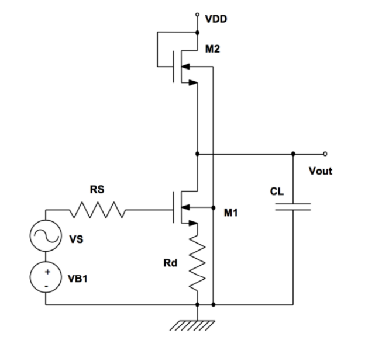

EE140_Lab
EE140/240A: Linear/Analog Integrated Circuits
Description: Single and multiple stage transistor amplifiers. Operational amplifiers. Feedback amplifiers, 2-port formulation, source, load, and feedback network loading. Frequency response of cascaded amplifiers, gain-bandwidth exchange, compensation, dominant pole techniques, root locus. Supply and temperature independent biasing and references. Selected applications of analog circuits such as analog-to-digital converters, switched capacitor filters, and comparators. Hardware laboratory and design project.
This lab contains 3 stage and followed by a project:
EE140/240A is all about Amplifier Design
● Lab 1: Introduction to Cadence.
● Lab 2: Designing Amplifiers via Hand Calculations.
● Lab 3: Designing Amplifiers via Python/Matlab Scripts.
● Project: Amplifier Design for an Application.
I will cover lab2 ~ project contents, updating my work and hopefully finished in 2024 summer.
03/19/2024:
Lab2: Long Channel Amplifier Design
Part A: Analysis and Simulation
In this first part, you will analyze and simulate a saturated NMOS load degenerated-source amplifier, shown below.

Scenario 1.
Assume that VB1 = 1.1 V , Rd = 0 (i.e. no degeneration), (W/L)1 = (50/5) µm/µm, and (W/L)2 = (10/90) µm/µm. VDD = 5 V , Rs = 5 kΩ and CL = 2.5 pF.
Scenario 2.
Assume that VB1 = 1.2 V , Rd = 2.5 kΩ, (W/L)1 = (50/5) µm/µm, and (W/L)2 = (10/90) µm/µm. VDD = 5 V , Rs = 5 kΩ and CL = 2.5 pF.
For each scenario, answer the following:
• Determine the small-signal gain vout/vs using both hand calculation and simulation. You should plot the magnitude of the gain (in dB) vs. log-scale frequency for this amplifier. You may make any reasonable approximations in your hand calculations, but be sure to write them down. Use the GmRout method for your hand-calculations (see Ed Discussion for the method).
• Determine the cutoff frequency (3 dB bandwidth) using both hand calculations and simulation. You may make any reasonable approximations in your hand calculations, but be sure to write them down.
• Determine the maximum output voltage swing that this amplifier can deliver. You do not have to calculate output swing, only the simulated value and plot needs to be reported.